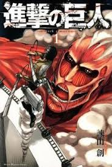
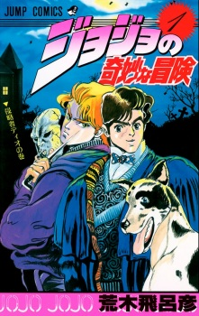

Welcome to Anime Addict's Manga page where you can find different types of manga we recommend for reading
Attack On Titan:
Hundreds of years ago, horrifying creatures which resembled humans appeared. These mindless, towering giants, called "titans," proved to be an existential threat, as they preyed on whatever humans they could find in order to satisfy a seemingly unending appetite. Unable to effectively combat the titans, mankind was forced to barricade themselves within large walls surrounding what may very well be humanity's last safe haven in the world.
In the present day, life within the walls has finally found peace, since the residents have not dealt with titans for many years. Eren Yeager, Mikasa Ackerman, and Armin Arlert are three young children who dream of experiencing all that the world has to offer, having grown up hearing stories of the wonders beyond the walls. But when the state of tranquility is suddenly shattered by the attack of a massive 60-meter titan, they quickly learn just how cruel the world can be. On that day, Eren makes a promise to himself that he will do whatever it takes to eradicate every single titan off the face of the Earth, with the hope that one day, humanity will once again be able to live outside the walls without fear. (source:
myanimelist)
JoJo Bizzare Adventures part 1 Phantom Blood:
While the gold rush takes Europe by storm, a young Jonathan Joestar lives a life of luxury with his father at their estate in Liverpool, England. Jonathan, known by his peers as JoJo, spends his days playing the part of a gentleman and living a carefree life. However, those peaceful days soon came to an end when Dio Brando intrudes upon him.
Dio is young boy from London who is adopted into the Joestar family due to a debt Jonathan’s father owed to Dio’s father. While Jonathan is receptive towards having a new brother, Dio schemes against the Joestars in order to inherit the fortune. As Dio’s schemes get out of hand, Jonathan is forced to confront him once and for all.
Thus begins the story of the Joestar bloodline, as Jonathan matures with and eventually combats his adoptive brother while encountering bizarre new friends and foes. (Source: myanimelist)
 One Piece:
One Piece:
Gol D. Roger, a man referred to as the "Pirate King," is set to be executed by the World Government. But just before his demise, he confirms the existence of a great treasure, One Piece, located somewhere within the vast ocean known as the Grand Line. Announcing that One Piece can be claimed by anyone worthy enough to reach it, the Pirate King is executed and the Great Age of Pirates begins.
Twenty-two years later, a young man by the name of Monkey D. Luffy is ready to embark on his own adventure, searching for One Piece and striving to become the new Pirate King. Armed with just a straw hat, a small boat, and an elastic body, he sets out on a fantastic journey to gather his own crew and a worthy ship that will take them across the Grand Line to claim the greatest status on the high seas.(source: myanimelist)
© This is a demonstration website for LSBU (London Southbank University) all images and text is from, wikipedia, myanimelist, Crunchyroll, tenor, mangarock